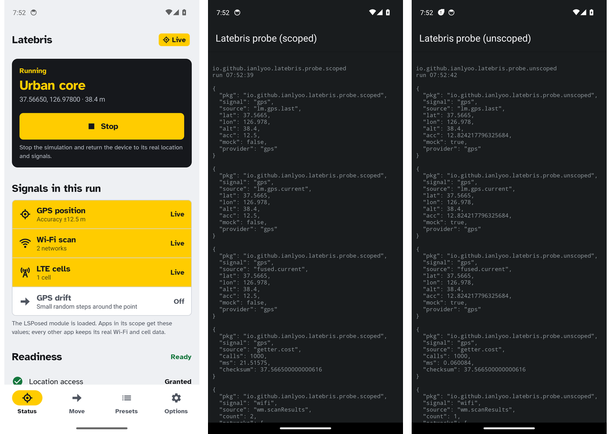

Overview
A preset bundles a GPS position, the Wi-Fi access points a scan returns and the LTE cells the phone reports. Press Start and Latebris serves the preset in one of two ways.
| Stock path | Hook path | |
|---|---|---|
| Device | Android 12+; Latebris is the mock location app | Rooted with Magisk, Zygisk and LSPosed; the target app is in the module's scope |
| GPS | Preset position, marked as mock | Preset position, not marked as mock |
| Wi-Fi scan | Real | Preset access points |
| Cells | Real | Preset LTE cells |
| Verified on | Android 15 emulator | Android 14 emulator, Magisk 26.4, LSPosed 1.9.2 |
What a probe app read
Hook path, "Urban core" preset running, one probe inside the LSPosed scope and one outside it:
| Reading | In scope | Outside scope |
|---|---|---|
| GPS | 37.5665, 126.9780 · mock false | 37.5665, 126.9780 · mock true |
| Wi-Fi scan | qa-lab-a, qa-lab-b | AndroidWifi (the emulator's own) |
| Serving cell | LTE 450/05, CI 22011 | LTE 310/260, CI 47108 (the emulator's own) |
After Stop both probes read the real position and signals again. Full steps, including what happens when Latebris is killed mid-run, are in VERIFICATION.md; what is not covered and how a defender can detect Latebris is in LIMITATIONS.md.

Install
Download latebris-0.3.0.apk from Releases. Uninstall any 0.1.x build first: the package name changed to io.github.ianlyoo.latebris. Setup steps for both paths are in the README (한국어).
Use Latebris only on devices you own and apps you are allowed to test.